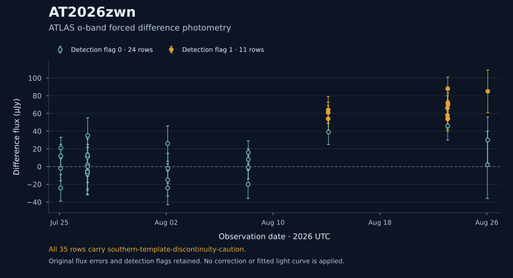
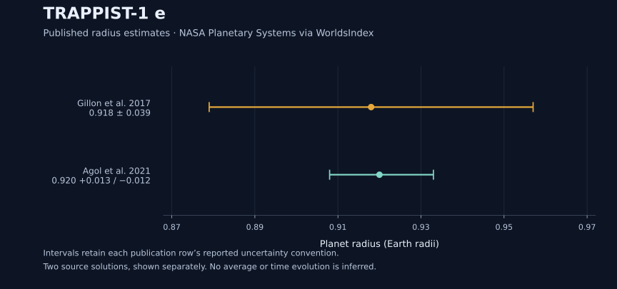

Science
A changing sky.
Other worlds.
Observations of transient sources, measurements of distant planets, and the evolution of stars.
The variable universe
AT2026zwn
Optical observations over time
ATLAS measured this source repeatedly through July and August 2026. The light curve shows its measured flux relative to the reference image, including low-significance and negative estimates.
Unclassified in the retained CTAS snapshot
Open the full light curve & source record
Data qualification: All 35 measurements carry the source integration’s southern-template-discontinuity caution. This plot alone does not establish an explosion time or transient classification.
Observations: 25 July–26 August 2026 · CTAS snapshot: 7 September 2026 UTC
Measurements & provenance
Source-reported flux errors are retained without assigning an additional uncertainty convention. A detection flag of 0 is not an upper-limit measurement.
| Observed (UTC) | Flux (μJy) | Reported error (μJy) | Detection flag |
|---|---|---|---|
| 2026-07-25T02:11:22.531200Z | -2.0 | 14.0 | 0 |
| 2026-07-25T02:15:55.468800Z | -24.0 | 15.0 | 0 |
| 2026-07-25T02:24:26.611200Z | 12.0 | 13.0 | 0 |
| 2026-07-25T02:37:36.652800Z | 21.0 | 12.0 | 0 |
| 2026-07-27T02:20:17.692800Z | -8.0 | 23.0 | 0 |
| 2026-07-27T02:22:14.678400Z | -5.0 | 27.0 | 0 |
| 2026-07-27T02:24:51.667200Z | -6.0 | 21.0 | 0 |
| 2026-07-27T02:26:49.171200Z | 11.0 | 22.0 | 0 |
| 2026-07-27T02:34:13.008000Z | 13.0 | 18.0 | 0 |
| 2026-07-27T02:42:58.665600Z | 2.0 | 20.0 | 0 |
| 2026-07-27T02:45:41.788800Z | 0.0 | 25.0 | 0 |
| 2026-07-27T02:48:18.777600Z | 35.0 | 20.0 | 0 |
| 2026-08-02T02:28:19.545600Z | -24.0 | 19.0 | 0 |
| 2026-08-02T02:32:53.606400Z | 26.0 | 20.0 | 0 |
| 2026-08-02T02:36:53.539200Z | -15.0 | 18.0 | 0 |
| 2026-08-02T02:51:19.699200Z | -2.0 | 17.0 | 0 |
| 2026-08-08T03:01:33.398400Z | -20.0 | 16.0 | 0 |
| 2026-08-08T03:17:10.838400Z | 16.0 | 13.0 | 0 |
| 2026-08-08T03:21:44.380800Z | -1.0 | 13.0 | 0 |
| 2026-08-08T03:25:40.771200Z | 8.0 | 12.0 | 0 |
| 2026-08-14T02:52:36.595200Z | 61.0 | 12.0 | 1 |
| 2026-08-14T02:55:12.288000Z | 54.0 | 15.0 | 1 |
| 2026-08-14T02:59:48.595200Z | 64.0 | 15.0 | 1 |
| 2026-08-14T03:33:19.728000Z | 39.0 | 14.0 | 0 |
| 2026-08-23T01:11:52.828800Z | 66.0 | 14.0 | 1 |
| 2026-08-23T01:15:07.488000Z | 58.0 | 14.0 | 1 |
| 2026-08-23T01:30:35.596800Z | 54.0 | 14.0 | 1 |
| 2026-08-23T01:37:11.827200Z | 46.0 | 16.0 | 0 |
| 2026-08-23T01:45:20.592000Z | 88.0 | 13.0 | 1 |
| 2026-08-23T01:56:46.521600Z | 54.0 | 12.0 | 1 |
| 2026-08-23T02:01:20.755200Z | 72.0 | 14.0 | 1 |
| 2026-08-23T02:15:42.595200Z | 70.0 | 13.0 | 1 |
| 2026-08-26T01:03:51.321600Z | 2.0 | 38.0 | 0 |
| 2026-08-26T01:36:11.865600Z | 30.0 | 26.0 | 0 |
| 2026-08-26T01:43:38.380800Z | 85.0 | 24.0 | 1 |
Source fields, record IDs, selection, and snapshot provenance (JSON)
Planetary systems
TRAPPIST-1 e
Published estimates of a planet’s radius
Two published analyses report a radius close to Earth’s. The later solution reports smaller uncertainties. Each estimate remains associated with its original paper and assumptions.
NASA Planetary Systems publication rows
Explore the system & published solutions
Radius constrains planetary size; it does not by itself establish composition, an atmosphere, or surface conditions.
WorldsIndex catalog snapshot: 5 September 2026 UTC
Values & source records
| Publication | Radius (Earth radii) | Upper error | Lower error (signed) |
|---|---|---|---|
| Gillon et al. 2017 | 0.918 | 0.039 | -0.039 |
| Agol et al. 2021 | 0.92 | 0.013 | -0.012 |
Uncertainty bounds are reproduced from the catalog’s publication rows. The two solutions are not assumed independent.
Source fields, publication IDs, and snapshot provenance (JSON)
Related research